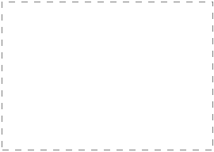

从部件导航器中创建第二个图纸
-
在部件导航器中，右击图纸节点并选择插入图纸页。
将出现与前面创建第一个图纸页时使用的相同的图纸页对话框。
这一次，您将为第二个图纸页手动定义设置。
-
在大小组中，点击标准尺寸。
-
从大小列表中，选择 A1 — 594 x 841。
列表中可选的尺寸是根据设置的单位而来，您可以指定英寸或毫米为图纸单位，而不用考虑部件的模型单位。
这个对话框中的图纸比例将成为所有添加到图纸中的视图的原始比例。
稍后您将看到，您随时可以调整图纸页中特定视图的比例。
比例显示为一个比率。
例如，如果您需要将所有的图纸视图缩放到二分之一大小，比例将显示为1:2。
对于这个图纸，您可以将所有视图以全尺寸显示。
-
保留比例设置1:1。
系统将为每一个图纸页提供一个默认的名称，当然您也可以输入您想要的名称。
-
在图纸页名称输入框中，键入 SHT2，但先不要回车。
图纸页名称输入框是区分大小写的，所有键入的字符也将保持它们的大小写格式。
图纸默认是英制还是公制，这取决于您的用户默认设置。
-
在设置组中，确保选择的是毫米。
-
确保选择的是第三角投影。

-
点击确定以创建新的图纸页。
图纸页名称将显示在图形区域的左下角，图纸页的边界，594mm X 841mm，以虚线框表示。

图纸页 “SHT2” 工作